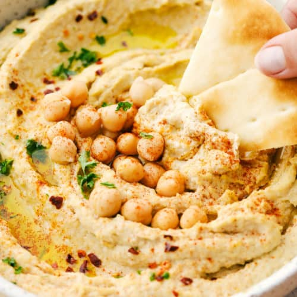
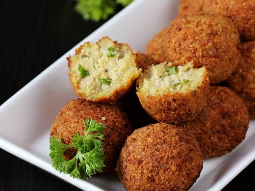
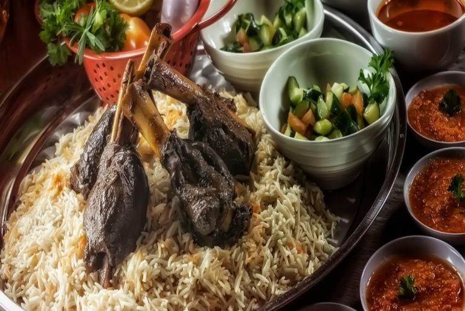

Popular
Mediterranean
Foods
Hummus
Hummus is a dip of Arab origin. It is a savory dish made from cooked, mashed chickpeas blended with tahini, lemon juice, and garlic.The standard garnish in the Middle East includes olive oil, a few whole chickpeas, parsley, and paprika.
Falafel
Falafel is a deep-fried ball or patty-shaped fritter of Arab origin, featuring in Middle Eastern cuisine. It's main ingredients are broad beans, ground chickpeas or both. Falafel is eaten throughout the Middle East and is a common street food.These snack balls may be topped with salads, pickled vegetables and hot sauce. It's also drizzled with tahini-based sauces. Falafel balls could be eaten alone as a snack or served as part of a meze tray (assortment of appetizers).
Mandi
Mandi is a popular traditional arabian dish. It originated from Yemen.
Mandi consists of meat and rice mixed with a special blend of spices, cooked in a pit. The meat is cooked in a pit called tandoor.
Dry wood is placed in the tandoor and burned to generate heat turning the wood into charcoal.
The meat is then boiled with whole spices until tender, and the spiced stock is then used to cook the basmati rice at the bottom of the tandoor. The meat is suspended inside the tandoor above the rice and without touching the charcoal. After that, the whole tandoor is closed with clay for up to eight hours.